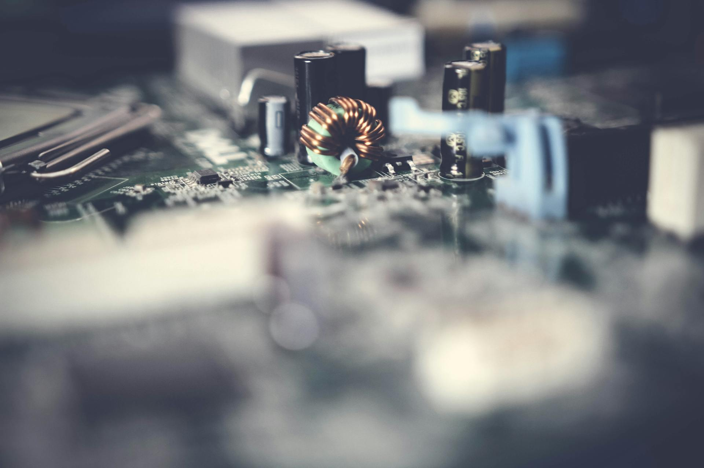

■ 说透 / SHUOTOU · 知览
SUBTITLE
开关电流低了100万倍，能耗砍掉70%，但离量产还很远

训练一个 GPT-4 级别的大模型要烧掉大约 50 吉瓦时的电，够 4 万户中国家庭用一整年。IEA 的数据说 2024 年全球数据中心用电 415 太瓦时，AI 占了 53 到 76 太瓦时，到 2028 年可能翻到 326 太瓦时。说白了，现在限制 AI 往前跑的最大瓶颈就一个字：电。
2026 年 3 月，剑桥大学在《科学进展》（Science Advances）上发了一篇论文，搞了一种新型忆阻器（memristor）材料，开关电流比传统器件低了大约 100 万倍，整体能耗最多砍掉 70%。从 Tom's Hardware 到 ScienceDaily 刷了一轮屏。
那这个东西为什么重要？因为现在的芯片有一个根本性的浪费：数据存在内存里，算的时候搬到处理器，算完再搬回去，不管有没有在算东西，时钟一直在跳，电一直在烧。但人脑不是这么干活的——大脑功耗大约 20 瓦，跟一个 LED 灯泡差不多，秘诀是神经元只在收到信号时才激活，而且存储和计算发生在同一个地方，不存在数据搬来搬去的问题。
DATA — 大脑 vs GPU 集群：能耗对比
人类大脑 — 功率约 20 瓦，860 亿个神经元，按需激活
NVIDIA H100 单卡 — 功率约 700 瓦
训练 GPT-4 的集群 — 总耗电约 50 吉瓦时
Intel Hala Point 类脑系统 — 11.5 亿个仿神经元，能效超 15 万亿次 8-bit 运算/秒/瓦
— 01 —
"类脑计算"（neuromorphic computing）就是想模仿这套逻辑——存算一体，按需激活，没输入就熄火。理论上天生省电，但搞了几十年了，真正能用的东西少得可怜。
— 02 —
好，到这儿咱们可以回到剑桥这篇论文了。
它的核心突破在一个叫"忆阻器"的东西上。忆阻器这个名字听着玄，其实原理不复杂，我尽量用人话说——它是一种电阻值可以被改变、而且改完之后断电也不会忘记的器件。你可以把它想象成一个水龙头，你拧到某个位置，水流大小就固定在那儿了，哪怕你松手它也不会自己弹回去。不同的电阻值可以代表不同的信息，这就同时完成了"存储"和"计算"两件事——跟大脑突触的工作方式很像。
但以前的忆阻器有个要命的问题。传统的金属氧化物忆阻器，靠的是在材料内部形成和断裂微小的导电细丝来切换状态。这些细丝的行为非常不稳定，有时候粗有时候细，需要的电压也很高，用着用着性能就飘了。就好比你那个水龙头，拧一次松一次，每次水流大小都不一样，用久了还会漏水。这直接导致了忆阻器在大规模芯片里根本没法用——你没法保证几百万个忆阻器的行为是一致的。
剑桥团队换了个思路。他们没有去修那些不听话的导电细丝，而是用了一种改性的氧化铪（hafnium oxide）薄膜，往里面掺了锶和钛，然后用一种两步生长工艺在层和层之间造出了微小的电子门（p-n 结）。这样一来，器件切换电阻不再靠细丝的形成和断裂，而是靠调整这些电子门的能量势垒——这个过程平滑得多，可控得多。
测试结果是，新器件的开关电流低于 10 纳安，比传统氧化物忆阻器低了大约 100 万倍，而且能产生几百个不同的电导级别。100 万倍是什么概念？如果传统忆阻器每次切换相当于拧开一个消防栓，剑桥这个就相当于用滴管滴了一滴水。
我们工程化了一种多组分薄膜，它在低于 10 纳安的电流下平滑切换状态，同时产生数百个不同的电导级别。
— 剑桥大学研究团队，发表于 Science Advances
这意味着什么呢，如果这种忆阻器能做成大规模芯片，AI 推理的能耗最多能降低 70%，而且系统学习和适应的方式会更接近生物大脑——不是靠把海量数据搬来搬去暴力计算，而是靠局部调整突触连接的强度。
— 03 —
那到底能不能做成大规模芯片？这才是真正要命的问题。
老实说，短期内很悬。剑桥这个材料的制备温度大概要 700 摄氏度，而现在标准的半导体制造工艺（CMOS）通常要求后段制程温度控制在 400 度以下，700 度会把前面已经做好的电路层给烫坏。这不是调调参数就能解决的事，要么工艺流程要大改，要么得找到能在更低温度下实现同样效果的方法。
而且制造问题只是冰山的第一角。类脑芯片面对的更大麻烦，是整个软件生态几乎是空白的。你现在训练一个 AI 模型，用的是 PyTorch、TensorFlow 这些成熟框架，跑在 NVIDIA 的 CUDA 生态上面，从工具链到调试器到社区支持全都齐全。但类脑芯片用的是脉冲神经网络（SNN），需要完全不同的编程框架和算法，现有的深度学习工具基本都用不上。
类脑芯片距离实用部署的四道坎
- 制造工艺 → 700°C 制备温度不兼容现有 CMOS 产线，需要突破低温制造工艺
- 软件生态 → 没有 PyTorch/CUDA 级别的成熟框架，SNN 编程工具链几乎为零
- 器件一致性 → 百万级忆阻器阵列中每个器件的行为必须高度一致，良率是硬指标
- 杀手级应用 → 目前 SNN 在实际任务上的表现还没有全面超过传统深度学习
但如果你问我，最现实的问题还不是技术上的。这些年 NVIDIA 在 GPU 生态上砸的钱和建的壁垒太深了，整个 AI 产业的基础设施、人才储备、软件工具全是围绕 GPU 架构长起来的。你让大公司放弃已经投了几千亿的 GPU 产线和软件栈，转向一个连成熟编程工具都没有的全新架构，这个迁移成本不是一篇论文能说服的。Nature Communications 今年一篇综述直接说了，"类脑计算技术要走向商业成功，面临的挑战不光是技术上的，还有整个产业愿不愿意拥抱这个转变的问题"。
那你可能会问，类脑芯片是不是就只是实验室里的玩具？也不完全是。Intel 的 Hala Point 系统已经部署在桑迪亚国家实验室了，有 11.5 亿个仿神经元，在持续学习类的任务上展示了比 GPU 高 5600 倍的能效优势。2025 年 4 月有团队把大语言模型跑在了 Intel 的 Loihi 2 类脑芯片上，准确率跟同等 GPU 版本差不多，但能耗只有一半。这些实验室级别的成果说明方向是对的，但距离替代 GPU 成为 AI 的主力算力底座，还隔着好几代技术迭代和一整个产业生态的重建。
好，那回到最开始那个问题。AI 的能耗危机到底有多紧迫？IEA 的预测是到 2030 年全球数据中心用电量翻到 945 太瓦时，占全球总发电量的近 3%。微软、Google、Meta 这些大厂最近两年疯狂签核电协议、买天然气电厂、投小型模块化反应堆（SMR），不是因为他们突然关心环保了，是因为如果不自己搞电，按照现在 AI 用电量的增长速度，公共电网真的撑不住。
而类脑计算提供的是另一条路：不是去找更多的电，而是从根本上让 AI 少用电。剑桥这篇论文证明了材料层面可以做到开关电流降 100 万倍，Intel 的 Hala Point 证明了系统层面可以做到能效提升几千倍，但从实验室到量产线，中间隔着工艺兼容、软件生态、产业惯性这三座山。
电费这道题，目前还没有人真的答完。剑桥给了一个新的解题思路，但什么时候能交卷，说实话，谁也不知道。
电费这道题，目前还没有人真的答完。
· · ·
ZAYEN知览
说透 · SHUOTOU · 知览